Easy to UseOnRobot のワンシステムソリューションどのロボットでも、システムは OnRobot ひとつ
デンセンはデンマーク・オーデンセに本社を置きグローバルに事業展開しているロボットハンドメーカー OnRobot と代理店契約しました。
OnRobotはユニバーサルロボットの創設者が 協働 ロボット向けに新たに創設したロボット用ハンドの専門メーカーです。革新的なプラグ＆プロデュース機能により、幅広く利用可能であり、使い易さ、費用対効果、安全性に優れたハンドを開発し続けています。ほぼ全てのロボットメーカーにグリップ技術とセンサー技術をご利用頂けますので、使用目的に合った真の 協働 ソリューションが実現します。 OnRobot の 協働 アプリケーションによる自動化は、どんな規模や業種にとっても採用しやすく、利益に直結します。内配線式の Quick Changer が内蔵された事で、 OnRobot ツールのプログラミングがシンプルになり設置が簡単になりました。そのため導入までの期間が短くなり、生産を迅速に立上げて稼働させる事が出来ます。生産性が向上し、お 客様 の使用用途での投資収益が早い段階で確保できます。
デンセンFAソリューションはOnRobot社の日本国内正規代理店です
OnRobotが選ばれる理由
-
協業ロボットによる
展開時間の短縮協業ロボットとエンドエフェクターは、簡単なプログラミングをモットーに設計されているので、技術経験のない従業員でもすぐにロボットの使用を学び、作業に慣れることができます。メーカーにはアプリケーションを実験的に試す自由と柔軟性が与えられるので、新しいニーズの可能性に対する準備をする余裕もできます。
-
柔軟な生産過程
特定の製造作業のために、専用ツールを用意するには費用もかかり、不利な用件となります。それとは対照的にOnRobot社のアームエンドツーリングは、クイックチェンジャーにより簡単に交換でき、異なる作業や生産環境にもスムーズに組み込むことができます。
-
より高い投資利益率
フレキシブルなエンドエフェクターの使用により、ロボットは繰り返す作業を、より高い一貫性と正確性を持って遂行でき、ユーザーはより早く投資を回収できます。ロボットが、3Kの作業を行う間、従業員は、心を持つ人間に適したよりレベルの高い業務に携わることができます。
New Releaseロボット用カメラの新製品“Eyes(アイズ)”どのロボットでも、システムは OnRobot ひとつ
Eyesはロボットの手首または外部に簡単に取り付けることができ、クイックチェンジャーを介してOnRobotの各種グリッパーと簡単に統合できます。必要なのは1枚の画像のキャリブレーションと部品認識のみで、自動フォーカスにより同じアプリケーション内のさまざまな働きを自動的に行います。すべての関連する周辺機器と同様、Eyesは主なロボットメーカーのロボットに対応しています。また、直感的なプログラミングがソフトウェアに組み込まれています。
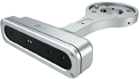OnRobot Eyes
■OnRobot Eyesの主な特長
- 高速で簡単なプログラミング
- 1画像のキャリブレーションにて部品認識
- 選択可能なロボット手首用マウントまたは外部接続用マウント
- 奥行知覚のための2.5Dビジョン
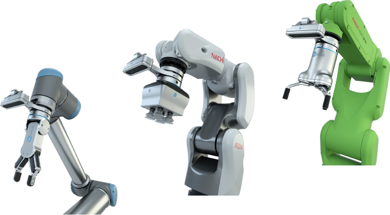
Products協同アプリケーションのワンストップショップどのロボットでも、システムは OnRobot ひとつ
OnRobotの多種多様なグリッパーとセンサーは、汎用性、柔軟性、使いやすさの点でいえば活躍の場は無限にあります。お客様の使用用途にどの製品が最も適しているか、以下でご紹介する様々な使用用途をご覧下さい。
-
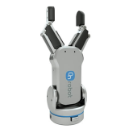
GR2グリッパー
-
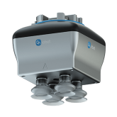
VGC10
-
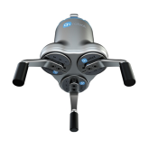
3FG15
３指グリッパー
腕先ツールのワンストップショップ
OnRobotの製品は不可能だと思われていたタスクの自動化に新しい可能性を見い出します。産業自動化用最新グリップ及びセンサーシステムでは、現場作業員と協働ロボットが並行して組立て、表面加工、ピック＆プレース、機械加工そしてテストを実施できる真の協働アプリケーションを簡単に設計して頂く事が出来ます。
-
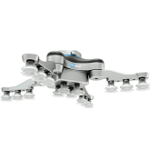
VG10電動真空
グリッパー -
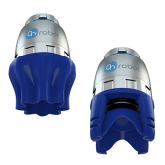
ソフトグリッパー
-
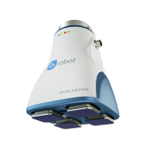
GECKOグリッパー
コンパクトで跡が付かない
GECKOシングルパッド粘着グリッパ
コンパクトで軽量なGeckoシングルパットグリッパーは、ケーブル、電気、空気、プログラミングが不要で、費用対効果が高く、プラグ＆プレイが可能です。
-
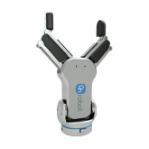
GR6グリッパー
-
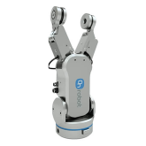
RG2-FTグリッパー
-
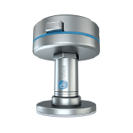
GECKOシングル
パットグリッパー
自動化ニーズに合わせた
ロボットアームグリッパー、センサー、ツールチェンジャー
OnRobotの革新的なグリッパー、力覚センサー、ツールチェンジャーは協業オートメーションにおいて大きな変革をもたらし、前代未聞の新しい自動化及び最適化の可能性を切り拓いていきます。全製品がクィックチェンジャーマウントに対応しており、接続はワンクリックで簡単です。即時に展開可能なソリューションを開発していますので、生産工程を瞬時に稼働させ、投資回収も即日から始まります。
-
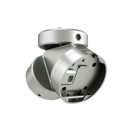
デュアルクイック
チェンジャ― -
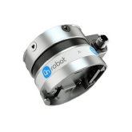
HEX6軸力/
トルクセンサー -
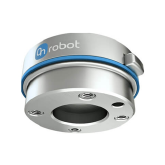
クイックチェンジャ
ソフトで柔軟性があり、食物用に認定
OnRobotソフトグリッパーは幅広いイレギュラーな形とデリケートな製品を持ち上げる事が出来、飲食物生産だけでなく製造又は梱包のピック・アンド・プレイスに最適です。このグリッパーは3つの交換可能なシリコン成形のカップを用いて使用する事が出来ます。
ソフトグリッパーは選択したロボットとシームレスに統合する事が出来ます。ソフトグリッパーは外部からの給気なしで操作出来る為、追加コストや複雑さはなく、従来のバキュームグリッパーで発生する誇りや騒音も有りません。
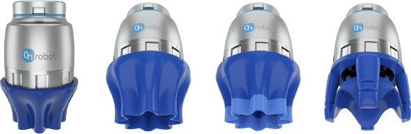
Collaborationほぼ全てのロボットメーカーに対応
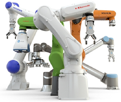
※基本的には全てのロボットに接続可能ですが、ロ ボットサイズや可搬重量により使用困難な場合が あります。
自動化推進に必要な全てのツールがここにあります。
お問合せ お見積り
該当の項目にチェックの上、お問い合わせください
| 製品選択（複数選択可） | |
|---|---|
|
|
| 社名 | |
| 部署名 | |
| ご担当者名 | |
| フリガナ | |
| 郵便番号 | |
| 住所 | |
| TEL | |
| FAX | |
| メールアドレス | |
| メールアドレス確認 | |
| お問い合わせ内容 | |
送信ボタンを押すとすぐに内容が送信されます。内容をよくお確かめのうえ送信ください。